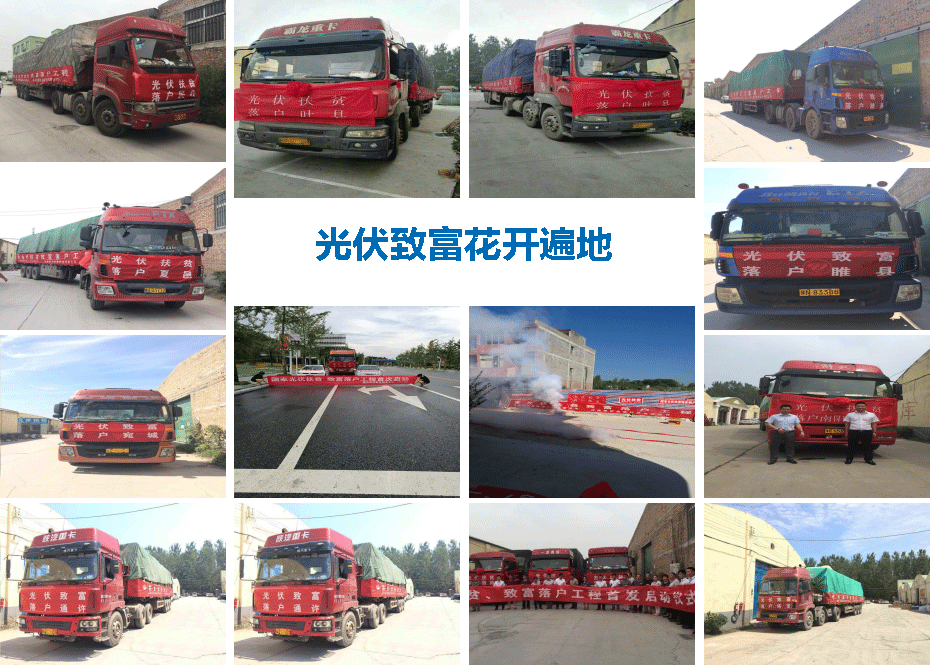

户用项目
光伏发电是指利用光伏材料的光电特性，将光的辐照能量转换为电能（直流），再通过逆变器并入三相交流电网的新能源发电。
区别于大型光伏电站的大功率、占地广，户用型光伏发电是指将光伏电池板置于家庭住宅顶层或者院落内，用小功率或者微逆变器进行换流过程，并直接利用该新能源，亦可将多余的电能并入电网。
目前，这种户用型的光伏发电在欧美等一些国家已经得到广泛推广，但在国内由于成本和技术层面的一些问题，还处于初级阶段，但随着国家对此忠实程度的提高，扶持力度的加大，以后会成为热门的研究方向和产业链。
户用的收益分析，安装一套5300户用光伏系统，自发自用，年发电量约7000度，年最高电费收益可达8960元，享受国家补贴20年，使用寿命超过30年。目前我国已经有好多的成功案例户用电站的安装，华沐通途光伏电站户用的地区 主要有开封通许、周口沈丘、平顶山鲁山、商丘雎县、许昌禹州、南阳陕县、洛阳偃师、南阳内乡。
全行业唯一的，线上线下，五年无偿运维。光伏产品，双重保障。组件：10年物理质保；25年效率质保。
光伏系统，全生命周期售后服务。24小时售后回访，48小时上门维修。每年会给予两次的定期巡检。全方位的质量保证、快速应答、回访跟踪售后体系。